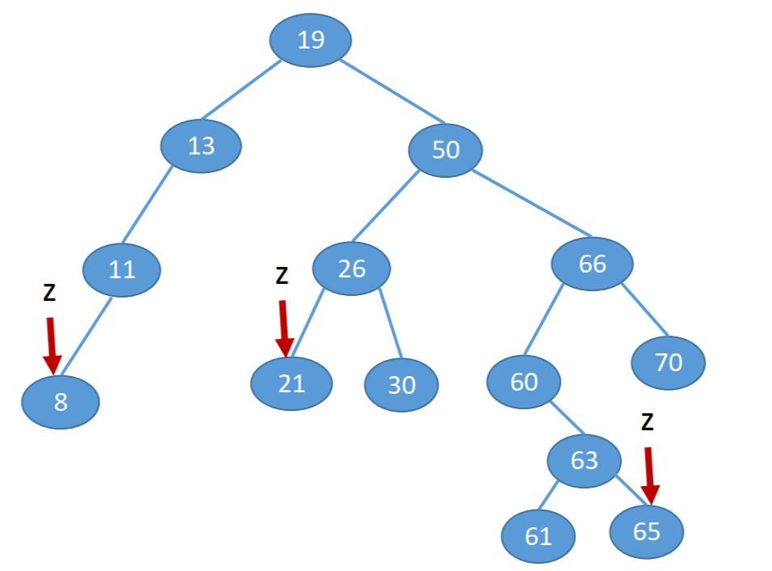
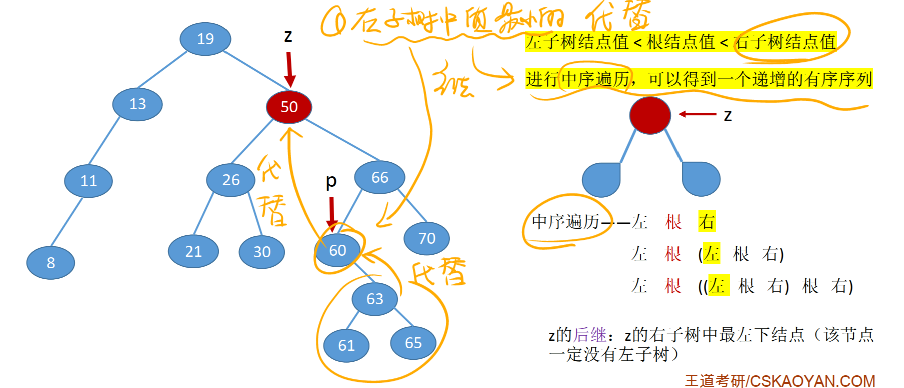
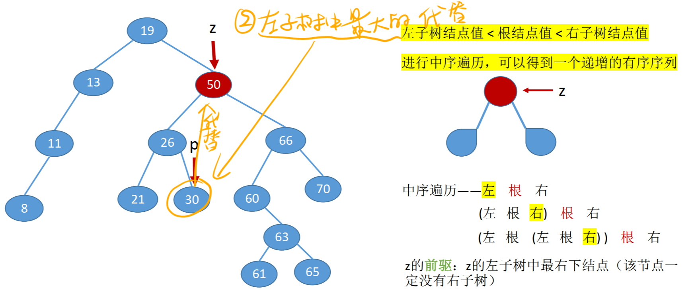
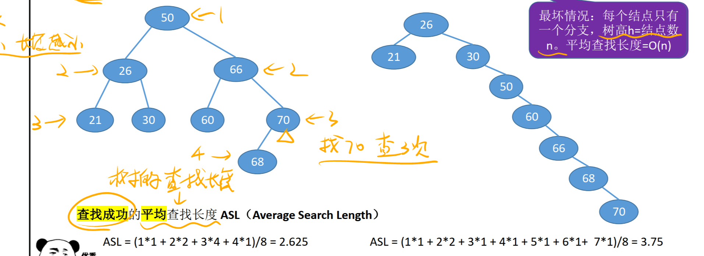
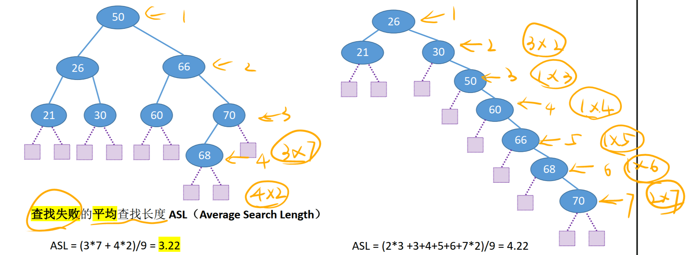

二叉排序树——Binary Search Tree
一、二叉排序树的定义
二叉排序树，又称二叉查找树(BST, Binary Search Tree)
定义：一棵二叉树或者是空二叉树，或者是具有如下性质的二叉树：
左子树上所有结点的关键字均小于 根结点的关键字；
右子树上所有结点的关键字均大于 根结点的关键字。
左子树和右子树又各是一棵二叉排序树。
左子树结点值<根结点值<右子树结点值
进行中序遍历,可以得到一个递增的有序序列
作用：元素的有序组织、搜索。

二、二叉排序树的存储结构（用链式存储）
二叉排序树的类型表述（与二叉树一样）
typedef struct TreeNode{
int data; //数据域
struct BiTNode *lchide, *rchild; //左、右孩子指针
}BSTNode, *BSTree;
三、二叉排序树的查找
非递归好于递归
算法思想： 若树非空，目标值与根结点的值比较： 若相等，则查找成功。 若小于根结点,则在左子树上查找,否则在右子树上查找。 查找成功,返回结点指针;查找失败返回NULL。
递归查找
最坏空间复杂度=O(h)
//在二叉排序树中查找值为key的结点（递归实现）
BSTNode *BST_Search(BSTree T,int key){
if(T == NULL) return NULL;
if(key == T->data) return T;
else if(key < T->data)
return BST_Search( T->lchild, key);
else
return BST_Search( T->rchild, key);
}
非递归查找
最坏空间复杂度=O(1)
//在二叉排序树中查找值为key的结点
BSTNode *NoRBST_Search(BSTree T,int key){
while(T!=NULL && key!=T->data){
if(key < T->data) T = T->lchild;
else T = T->rchild;
}
return T;
}
四、二叉排序树的插入
非递归好于递归
算法思想： 若原二叉排序树为空，则直接插入结点； 否则，若关键字k小于根结点值,则插入到左子树，若关键字k大于根结点值，则插入到右子树
递归插入
最坏空间复杂度=O(h)
//在二叉排序树插入关键字为k的新结点(递归实现)
int BST_Insert(BSTree &T,int key){
if(T == NULL){ //树为空，则插入根结点
T = (BSTree)malloc(sizeof(BSTNode));
T->data = k;
T->lchild = T->rchild = NULL;
return 1;
}
if(key == T->data){ //树中存在相同关键字的结点，插入失败
return 0;
}else if(key < T->data){
return BST_Insert( T->lchild, key); //插入到T的左子树
}else{
return BST_Insert( T->rchild, key); //插入到T的右子树
}
}
非递归插入
最坏空间复杂度=O(1)
//二叉排序树非递归插入，最坏空间复杂度Sn=O(1)
int NoRBST_Insert(BSTree &T, int key) {
BSTNode *pre = NULL;//二叉树里最后一个结点
if (T == NULL) { //原来树为空，申请结点将其插入进去
T = (BSTree)malloc(sizeof(BSTNode));
T->data = key;
T->lchild = T->rchild = NULL;
return 1; //成功插入
}
//获取到最后一个结点
while(T != NULL) {
if(key == T->data) {
return 0; //二叉排序树里不可能存在相同的结点，插入失败
} else if(key < T->data) {
pre = T;
T = T->lchild;//遍历左孩子
} else {
pre = T;
T = T->rchild;//遍历右孩子
}
}
//插入到左子树
if (key < pre->data) {
T = (BSTree)malloc(sizeof(BSTNode));
T->data = key;
pre->lchild = T;
} else { //到了此步已经不存在等于的情况
//插入到右子树
T = (BSTree)malloc(sizeof(BSTNode));
T->data = key;
pre->rchild = T;
}
}
五、二叉排序树的构造
//按照str[]中的关键字序建立二叉排序树
void Creat_BST(BSTree &T, int str[],int n){
T=NULL;
int i=0;
while(i<n){
BST_Insert(T,str[i]);
i++;
}
}
六、二叉排序树的删除
先搜索找到目标结点z：
①若被删除结点z是叶子结点，则直接删除，不会破坏二叉排序树的性质。

②若结点z只有一颗左子树或右子树，则让z的子树分为z父结点的子树，代替z的位置

③若结点z有左、右两棵子树，则令z的直接后继(或直接前驱)替代z，然后从二叉排序树中删去这个直接后继(或直接前驱)，这样就转换成了第一或第二种情况。
直接后继代替

直接前驱代替

七、查找效率的分析
查找长度：对比关键字的次数，反映了查找操作的时间复杂度。
与高度h有关。高度越小，查找效率越高
平衡二叉树的查找效率最高，也是最好情况
最好情况，平均查找长度=O(log~2~n)
最坏情况，平均查找长度=O(n)
平均查找长度计算
查找成功的平均查找长度：

查找失败的平均查找长度：
